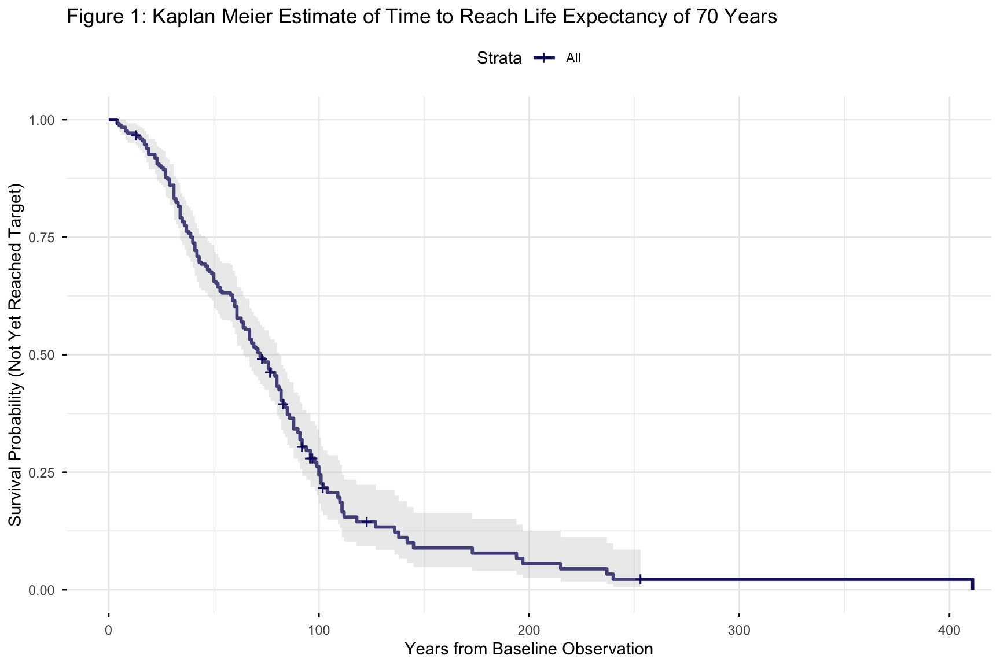
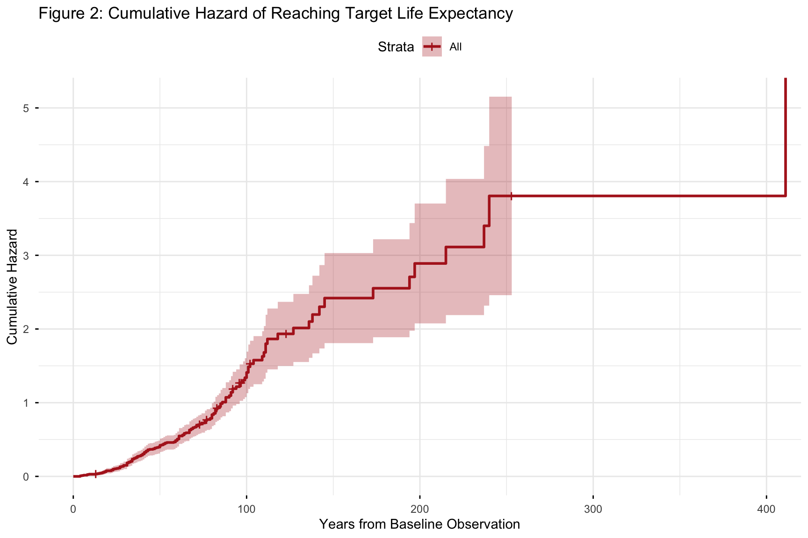

Survival and Event History Analysis in Social Science
Non Parametric Kaplan Meier and Cox Proportional Hazards Models
Author
Neena Abimbola Albarus
1. Theoretical Foundations and Methodological Overview
Survival analysis, also called event history analysis or duration analysis, studies the time until an event of interest occurs. Unlike ordinary regression, where the outcome is a single number, survival models handle two complications at once. First, the outcome is a duration, so the distribution of that duration matters. Second, and more importantly, some units in the sample never experience the event during the observation window. These units are right censored, meaning we know they survived up to a certain point but we do not know when, or whether, they eventually experienced the event.
Ignoring censoring and simply dropping the censored observations would bias every estimate because censoring is almost never random. Instead, survival models incorporate the censored observations through the hazard function, which describes the instantaneous risk of experiencing the event given that the unit has survived up to that point. From the hazard, we can derive the survival function, which gives the probability of remaining event free past any given time.
In this workbook, we study a substantive question in comparative public health. How long does it take for a country to reach a life expectancy of 70 years, and does the starting life expectancy predict how fast that transition happens? We use the Kaplan Meier estimator to describe the survival curve non parametrically, and the Cox proportional hazards model to estimate how a covariate shifts the hazard of reaching the target.
⚠️ Common Pitfalls
Ignoring censoring. The most common mistake in survival analysis is to treat censored observations as though the event never happened. Correctly handling censoring is the entire point of the method.
Confusing hazard with probability. The hazard is not a probability and can exceed 1. It is an instantaneous rate of failure. Interpreting hazard ratios as risk ratios is a common but incorrect shortcut.
Violating the proportional hazards assumption silently. The Cox model assumes that covariates shift the hazard multiplicatively and that the shift is constant over time. Always run cox.zph() and inspect the diagnostics.
2. Data Pipeline and Event History Construct
Before we can fit any survival model, we need to convert the longitudinal OWID panel into a country level dataset with a duration variable and an event indicator. Each row will represent one country, with the time it took to reach the life expectancy threshold of 70 years, or the time until right censoring if the country never reached that threshold.
# Dynamic path resolution across common working directoriespossible_paths <-c("../data/life_expectancy_data.csv","data/life_expectancy_data.csv","../../data/life_expectancy_data.csv","/Users/yawdgyal/Desktop/R for github/data/life_expectancy_data.csv","/Users/yawdgyal/Desktop/R for github/workbooks/data/life_expectancy_data.csv")data_path <- possible_paths[file.exists(possible_paths)][1]if (is.na(data_path) ||length(data_path) ==0) {stop("Could not locate 'life_expectancy_data.csv'. ","Searched the following paths:\n",paste(possible_paths, collapse ="\n") )}message("Loading data from: ", data_path)owid_raw <-read_csv(data_path, show_col_types =FALSE)# Standardize variable namesif ("Entity"%in%names(owid_raw)) { owid_df <- owid_raw %>%rename(country = Entity,code = Code,year = Year,life_exp =`Life expectancy` )} else { owid_df <- owid_df %>%rename_with(tolower)}# Construct event history framework: time until reaching life expectancy of 70survival_df <- owid_df %>%filter(!is.na(code), !is.na(life_exp)) %>%group_by(country) %>%arrange(year, .by_group =TRUE) %>%summarise(start_year =min(year),first_70_year =min(year[life_exp >=70], na.rm =TRUE),max_year =max(year),baseline_exp =first(life_exp),.groups ="drop" ) %>%mutate(event =if_else(is.finite(first_70_year), 1, 0),time =if_else( event ==1, first_70_year - start_year, max_year - start_year ) ) %>%filter(time >0)glimpse(survival_df)
What is happening here: The possible_paths vector lets the workbook run from multiple working directories. We then read the OWID CSV and defensively rename its columns. The summarise() call collapses the multi year panel into one row per country by recording the first year observed, the first year the country reached 70 years of life expectancy, and the last year observed. The event indicator is 1 if the country reached the threshold and 0 if it was right censored. The time variable is the number of years between the first observation and either the event or the end of the observation window. The filter(time > 0) drops any country whose entire observation window started after it had already reached the threshold, since those provide no information about the timing of the transition.
⚠️ Common Pitfalls
Treating the start year as the birth of the country. The event history clock here begins at the first year the country appears in the OWID data, not at some natural starting point. Whatever the earliest year in your panel is, every country shares that anchor, which may not reflect substantive reality.
Censoring countries at their last observed year rather than at a common calendar date. In this workbook, each country is censored at its own max_year. If your panel is unbalanced, that creates different censoring horizons across countries, which complicates comparison.
Dropping censored observations. Never filter on event == 1. Censored observations carry genuine information about survival probabilities and must be retained.
3. Non Parametric Kaplan Meier Estimation
The Kaplan Meier estimator is the non parametric workhorse of survival analysis. It estimates the survival function directly from the data without assuming any particular distribution for the duration, and it handles right censoring naturally by adjusting the risk set at each event time.
# Fit the baseline Kaplan Meier survival curvekm_fit <-survfit(Surv(time, event) ~1, data = survival_df)print(summary(km_fit, times =c(10, 20, 30, 40, 50)))
What is happening here: The Surv(time, event) call builds the survival object that every function in the survival package understands. The ~ 1 formula means we are fitting a single baseline curve with no covariates. The summary() call prints the estimated survival probability at selected time points, so you can read off the probability that a randomly chosen country has not yet reached 70 years of life expectancy at 10, 20, 30, 40, and 50 years after its first observation.
⚠️ Common Pitfalls
Reading the survival curve as a hazard. The Kaplan Meier curve gives the probability of remaining event free past a given time. It is not the same as the hazard, which is the instantaneous risk of the event at a given time.
Ignoring the confidence bands. Survival probabilities early in the curve are estimated with wide uncertainty, especially when few units are at risk. A point estimate without its confidence interval can be misleading.
Extrapolating beyond the last observed event time. The Kaplan Meier curve is undefined past the largest event time in the data. Beyond that point, the survival probability is not estimated, it is assumed.
The Cox proportional hazards model is the semi parametric workhorse of regression based survival analysis. It estimates how covariates shift the hazard of the event without making parametric assumptions about the shape of the baseline hazard.
# Fit the Cox Proportional Hazards modelcox_mod <-coxph(Surv(time, event) ~ baseline_exp, data = survival_df)modelsummary(list("Cox PH Model"= cox_mod),exponentiate =TRUE,stars =TRUE,gof_omit ="IC|Log|F")
Cox PH Model
+ p < 0.1, * p < 0.05, ** p < 0.01, *** p < 0.001
baseline_exp
1.134***
(0.011)
Num.Obs.
245
RMSE
0.97
# Test the proportional hazards assumptionph_test <-cox.zph(cox_mod)print(ph_test)
chisq df p
baseline_exp 36.8 1 1.3e-09
GLOBAL 36.8 1 1.3e-09
What is happening here: The coxph() function estimates the effect of baseline life expectancy on the hazard of reaching 70 years. The exponentiate = TRUE argument in modelsummary() converts the raw coefficients into hazard ratios, which are much easier to interpret. A hazard ratio above 1 means the covariate increases the hazard, meaning faster time to event. A hazard ratio below 1 means it slows the transition. The cox.zph() function then tests whether the proportional hazards assumption holds, meaning whether the effect of baseline life expectancy is constant over time. A significant p value is evidence against that assumption.
⚠️ Common Pitfalls
Interpreting hazard ratios as risk ratios. A hazard ratio of 2 does not mean the risk doubles. It means the instantaneous rate of failure is twice as high at every point in time, which translates into a less than doubled cumulative probability of the event.
Ignoring the proportional hazards test. A significant cox.zph() result is not a reason to abandon the model, but it is a reason to either stratify, add time varying coefficients, or use a different model entirely.
Causal interpretation of coefficients. Cox coefficients are partial associations. They do not identify causal effects unless the usual identification assumptions hold, which is rarely true in observational settings.
5. Diagnostic Visualizations
The three figures below show the non parametric survival curve, its cumulative hazard counterpart, and the proportional hazards diagnostic residuals. Together they tell the story of when the event tends to happen and whether the Cox model is well specified.
Figure 1: Kaplan Meier Survival Curve
km_plot <-ggsurvplot( km_fit,data = survival_df,conf.int =TRUE,palette ="midnightblue",title ="Figure 1: Kaplan Meier Estimate of Time to Reach Life Expectancy of 70 Years",xlab ="Years from Baseline Observation",ylab ="Survival Probability (Not Yet Reached Target)",ggtheme =theme_minimal())print(km_plot)

How to read this figure: The solid line is the estimated survival probability at each point in time. It starts at 1 and steps down each time a country reaches the 70 year threshold. The shaded ribbon around the curve is the 95 percent confidence interval. Steep drops in the curve indicate periods when many countries transitioned. Flat stretches indicate periods when few countries crossed the threshold.
🔑 Key Takeaway: The shape of the Kaplan Meier curve tells you when transitions cluster in time. A steep early drop means most countries reached the threshold quickly. A slow decay means transitions are spread across the observation window. The width of the confidence band tells you how much sampling uncertainty surrounds each point estimate.
cum_haz_plot <-ggsurvplot( km_fit,data = survival_df,fun ="cumhaz",palette ="firebrick",title ="Figure 2: Cumulative Hazard of Reaching Target Life Expectancy",xlab ="Years from Baseline Observation",ylab ="Cumulative Hazard",ggtheme =theme_minimal())print(cum_haz_plot)

How to read this figure: The cumulative hazard is the integral of the hazard function up to each point in time. It is monotonically increasing and starts at zero. The steeper the slope, the higher the instantaneous risk of the event during that period. When the cumulative hazard doubles over a given interval, that interval had particularly high hazard.
🔑 Key Takeaway: The cumulative hazard curve and the survival curve are two ways of showing the same underlying information. The cumulative hazard is often easier to interpret when the event is rare early on, because it directly shows where the risk is concentrated. A curve that stays near zero for a long time before shooting upward indicates a delayed onset of the transition.
How to read this figure: The plot shows scaled Schoenfeld residuals for baseline_exp plotted against time. A horizontal line with no systematic slope is evidence that the proportional hazards assumption holds. A visible trend, whether upward or downward, suggests the coefficient on baseline_exp varies over time, which violates the assumption. The ggcoxzph() function also adds a smoothed curve and a confidence band so you can see whether departures from the horizontal are statistically meaningful.
🔑 Key Takeaway: A flat Schoenfeld residual plot is a green light for the Cox specification. A trending residual plot means you should consider interacting the covariate with time, stratifying on it, or switching to an accelerated failure time model that does not rely on proportional hazards.
6. Putting It All Together
You now have a complete survival analysis workflow. You have converted a longitudinal panel into an event history dataset with durations and censoring indicators, estimated a non parametric Kaplan Meier survival curve, fit a Cox proportional hazards model with a covariate, and checked the proportional hazards assumption through both a formal test and a diagnostic residual plot.
The core decision rule is straightforward. Reach for the Kaplan Meier estimator when you want a description of the survival distribution with no covariate adjustment. Reach for the Cox proportional hazards model when you want to estimate how covariates shift the hazard of the event, provided the proportional hazards assumption holds. Reach for stratified Cox models or accelerated failure time models when the assumption fails. Reach for parametric survival models like Weibull or exponential when you have theoretical reasons to believe in a specific shape for the baseline hazard.
The Kaplan Meier curve and the Schoenfeld residual plot are your primary reporting devices. Show them alongside the hazard ratio table from the Cox model. Together they tell the reader what the survival distribution looks like, how strong the covariate effect is, and whether the modeling assumptions are credible. Survival analysis is one of the most powerful tools in the social science toolkit for studying transitions, and once you are comfortable with the basic pipeline in this workbook, you can extend it to any event of interest.